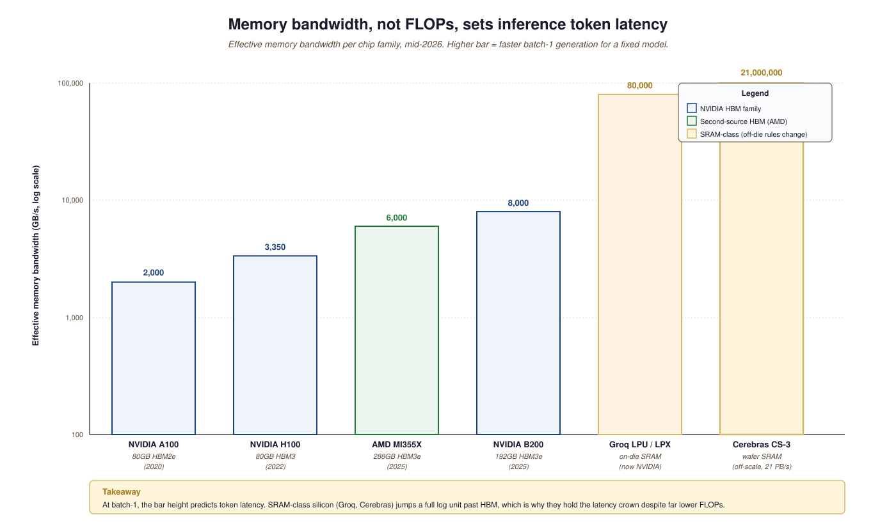

"There are only two hard things in computer science: cache invalidation, naming things, and bandwidth."
Adapted from Phil Karlton, with apologies, 2024
- Distinguish the five 2026 inference-silicon families (NVIDIA Blackwell, Cerebras CS-3, Groq LPU/LPX, Tenstorrent, AMD MI355X, AWS Trainium) by memory architecture and target workload.
- Explain why batch-1 LLM latency is bandwidth-bound rather than FLOPs-bound, and how that math drives Cerebras and Groq's design choices.
- Read 2026 silicon spec sheets without being misled by raw pflops or "tokens per second" figures.
- Identify which workloads still belong on NVIDIA training clusters versus the new inference-specialized silicon.
For ten years "what do you run an LLM on" had one answer. By 2026 it has five, each optimized for a different point on the training-inference / latency-throughput / centralized-edge surface. Understanding which silicon serves which workload is now a first-order architectural decision, not a procurement detail.
Prerequisites
This section assumes familiarity with LLM compute planning from Section 57.1 and with GPU procurement from Section 57.3. Familiarity with cross-hardware benchmarking from Section 57.4 helps when reading the spec-sheet comparisons.
For nearly a decade NVIDIA's H100 and (more recently) Blackwell B200 GPUs were the only practical answer to "what do you train a frontier model on". That stopped being true around the end of 2025. The non-NVIDIA inference silicon story is now real money and real deployments: Cerebras CS-3, Groq LPU (now NVIDIA-owned), Tenstorrent, and AMD's MI355X each carve a slice. Training is still dominated by NVIDIA Blackwell-class clusters, but inference, especially low-latency token streaming, is genuinely heterogeneous in 2026.
The single most consequential transaction was NVIDIA's $20B acquisition of Groq in December 2025. NVIDIA absorbed the LPU technology into the new "Vera Rubin LPX" inference rack architecture; the resulting product positions inference silicon as a first-class peer to training silicon inside NVIDIA's own line. Whether that consolidates the market or accelerates the alternatives (Cerebras IPO, AMD MI355 ramp, AWS Trainium roadmap) is one of the three open questions this chapter ends on.
58.1.1 Cerebras CS-3 and the wafer-scale bet
Cerebras's wafer-scale chip has roughly 900,000 cores on a single piece of silicon, an engineering feat that would have been impossible without TSMC's willingness to ship a wafer with defects and let Cerebras route around them in software. The chip is partly defect-tolerant because every wafer Cerebras ships almost certainly has defects.
Cerebras CS-3 packages 900,000 cores on a single wafer-scale chip with 44 GB of on-chip SRAM and 21 PB/s of memory bandwidth. The pitch is bandwidth-density: inference latency for large language models is bandwidth-bound, and CS-3 has more bandwidth per square centimetre than any conventional GPU cluster. In January 2026 Cerebras signed a $10B+ deal with OpenAI for 750 MW of capacity, the first hyperscaler commitment to wafer-scale silicon as a primary inference fabric. Cerebras filed for IPO in March 2026.
A wafer-scale engine treats one entire silicon wafer as a single chip: ~900,000 small cores joined by an on-wafer mesh (Swarm) so core-to-core messages never leave the die. Each core has its own local SRAM; there is no shared HBM, so the model's weights are streamed layer-by-layer from an external memory appliance (MemoryX) while activations stay resident, and the compiler lays out each layer's matmul across a region of cores in a dataflow pipeline. Because every wafer has fab defects, a redundant routing layer maps out bad cores and reconnects the mesh, so the part ships as a fully-connected fabric. The payoff is enormous aggregate SRAM bandwidth, which is what bounds batch-1 LLM latency.
58.1.2 Groq LPU (now inside NVIDIA Vera Rubin)
The Groq LPU (Language Processing Unit) is a deterministic-latency accelerator optimized for token streaming. Through 2024-25 Groq held the public latency crown, hitting 1000+ tokens/second on small open-weight models. NVIDIA acquired Groq in December 2025 for $20B; the LPU is now sold as the "LPX" inference rack alongside the Vera Rubin training rack. Existing Groq cloud customers still buy capacity via the Groq Console; the silicon itself ships through NVIDIA channels going forward.
The Groq LPU achieves deterministic latency by removing the hardware that makes GPUs unpredictable. It holds weights and activations in large on-chip SRAM rather than HBM, so there are no cache misses or memory-controller queues, and it has no dynamic schedulers or speculative execution. Instead the compiler statically lays out every operation and data movement onto the chip's functional units cycle by cycle, ahead of time. Because the schedule is fixed at compile time, the chip executes the same instruction stream every run with no runtime arbitration, which is why token-per-second latency is both very low and essentially constant. The trade-off is limited per-chip memory, so large models are sharded across many LPUs.
58.1.3 Tenstorrent (RISC-V chiplet)
Tenstorrent takes a different bet: RISC-V cores in a chiplet architecture, designed by Jim Keller. Tenstorrent raised $700M in December 2024 and shipped the Blackhole accelerator in 2025; their pitch is open-source compute, no CUDA lock-in, and a clear path to chiplet composability for custom system builds. The 2026 deployments are in research and HPC labs, not yet hyperscalers.
58.1.4 AMD MI355X and the second-source story
AMD's MI355X ships ~6 TB/s of HBM bandwidth and 288 GB of HBM3e per accelerator, the most memory of any commodity-channel chip in 2026. AMD's ROCm stack now supports PyTorch, vLLM, and most of the open-weight inference path; for many workloads MI355X is a viable second source. Hyperscalers (Microsoft, Oracle) have committed multi-billion-dollar orders. AWS's parallel story is Trainium 2 (GA December 2024) and Trainium 4 (expected late 2026).
58.1.5 Comparing the non-NVIDIA silicon
| Silicon | Type | Memory | Best for | Status |
|---|---|---|---|---|
| Cerebras CS-3 | Wafer-scale | 44 GB on-chip | Bandwidth-bound LLM inference | OpenAI deal, IPO pending |
| Groq LPU / NVIDIA LPX | Deterministic-latency | per-chip SRAM | Lowest-latency token streaming | NVIDIA-owned since Dec 2025 |
| Tenstorrent Blackhole | RISC-V chiplet | 32 GB GDDR6 | Open-source compute, custom builds | Research / HPC deployments |
| AMD MI355X | GPU + ROCm | 288 GB HBM3e | Largest-memory workloads | Hyperscaler-committed |
| AWS Trainium 2 / 4 | Cloud-locked ASIC | 96 GB HBM | AWS-native training/inference | Trainium 4 late 2026 |

The 2026 silicon story is best understood by ignoring FLOPs and watching where the data lives. A 70B model in fp16 reads 140 GB per token at batch-1; at 1000 tokens/s that demands 140 TB/s of memory bandwidth, more than any single GPU provides. Cerebras and Groq win because they put weights physically next to the arithmetic units (wafer-scale SRAM, distributed SRAM with deterministic routing). HBM gates a B200 even though its tensor cores are over-provisioned. The right mental model: think of frontier silicon as a memory hierarchy with arithmetic units bolted on, not the reverse. Horace He's "Making Deep Learning Go Brrrr" remains the clearest treatment.
On January 14, 2026, OpenAI signed a $10B+, 750 MW capacity commitment with Cerebras for inference-only deployment. Why inference and not training? Because OpenAI's GPT-5.5 was already trained on Blackwell, but serving it to a billion daily users had become the larger compute line item. The CS-3's 21 PB/s on-wafer bandwidth let OpenAI run frontier-class models at sub-100ms first-token latency without holding the model in HBM. This deal also explains the timing of Cerebras's March 2026 IPO filing: anchor-customer revenue was now contracted, so public-market valuation became defensible. Whether Anthropic and Google strike similar deals through 2026-27 is the open competitive question.
A vendor benchmark sheet showing "5 pflops fp16" tells you almost nothing about LLM serving latency. The question that matters is what fraction of peak FLOPs can the memory subsystem feed. Blackwell B200 is rated at 4.5 pflops fp8 but only 8 TB/s of HBM3e, so for batch-1 inference on a 70B model it operates at roughly 5% of peak. Cerebras CS-3 has 21 PB/s of on-die bandwidth and saturates its arithmetic. Always ask: peak FLOPs, peak memory bandwidth, and the arithmetic intensity of your workload. The three together predict throughput; any one of them in isolation does not. MIT's HERMES paper formalises this for multi-stage pipelines.
Trust Artificial Analysis and LMArena over vendor press releases. Both run cross-silicon evaluations on identical models with identical prompts; the resulting tokens/sec and time-to-first-token numbers are the only fair way to compare Groq, Cerebras, NVIDIA, and AMD at apples-to-apples granularity. Press-release numbers are typically batch-many throughput on a friendly workload.
Three questions stay open at the time of writing. First, whether the NVIDIA-Groq consolidation forecloses an independent inference-silicon ecosystem or accelerates it (Cerebras IPO, AMD MI355 ramp, AWS Trainium roadmap are the natural test cases). Second, whether bandwidth-density architectures (Cerebras CS-3) prove out at 1T+ parameter scale or whether they hit yield walls. Third, whether AMD's ROCm stack catches up enough that MI355X becomes a true second source rather than a contingency. Section 58.2 turns to the other axis of divergence: training across the public internet.
- The 2026 inference market is no longer NVIDIA-only: Cerebras, Groq/LPX, Tenstorrent, AMD MI355X, and AWS Trainium each anchor a workload class.
- Batch-1 LLM serving is bandwidth-bound, which is why wafer-scale SRAM (Cerebras) and deterministic SRAM routing (Groq) hold the latency crown over HBM-equipped GPUs.
- Training and inference silicon are diverging: NVIDIA still owns training; inference is genuinely multi-vendor.
- NVIDIA's $20B Groq acquisition (Dec 2025) consolidated low-latency inference inside NVIDIA's stack, raising the IPO/independence question for Cerebras and the survival question for the smaller alternatives.
Show Answer
Show Answer
Show Answer
Centralized accelerators define one end of the design space; the other end pushes training across geographically distributed nodes with limited bandwidth. Continue to Section 58.2: Decentralized Training: Nous Psyche, DeMo, DisTrO.